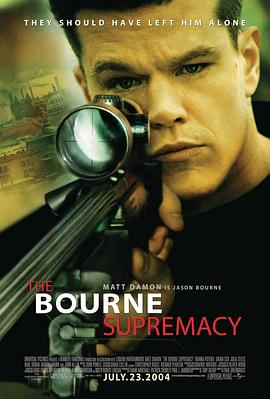

谍影重重2 / The Bourne Supremacy
又名：叛谍追击2：机密圈套(港) / 神鬼认证：神鬼疑云(台) / 伯恩的身份2 / 至尊伯恩 / 伯恩的霸权
伯恩的身份揭秘了！和前部一样，依然内容紧凑，节奏很快，作为悬疑片看得很爽！
作品信息
| 导演 | 保罗·格林格拉斯 |
| 编剧 | 罗伯特·陆德伦 / 托尼·吉尔罗伊 |
| 主演 | 马特·达蒙 / 布莱恩·考克斯 / 琼·艾伦 / 卡尔·厄本 / 弗朗卡·波滕特 / 朱丽娅·斯蒂尔斯 / 加布里埃尔·曼 / 马尔顿·索克斯 / 汤姆·加洛普 / 约翰·贝德福德·劳埃德 / 伊桑·桑德勒 / 米歇尔·莫纳汉 / 卡瑞尔·罗登 / 托马斯·阿拉纳 / 奥莎娜·阿金什那 / Yevgeni Sitokhin / 蒂姆·格里芬 / 肖恩·史密斯 / 马克西姆·科瓦莱夫斯基 / 帕特里克·克劳利 / 乔恩·科林·巴克利 / 谢恩·辛努特科 / Claudio Maniscalco / Dirk Schoedon / 伊万·舍甫多夫 / 丹尼斯·布尔加兹列夫 / 尼克·怀尔德 / 维克多·埃菲尔 / 埃莱娜·卡多纳 / 克里斯·库珀 |
| 类型 | 动作 / 悬疑 / 惊悚 |
| 制片国家/地区 | 美国 / 德国 |
| 语言 | 英语 / 俄语 / 德语 / 意大利语 |
| 上映日期 | 2004-11-14(中国大陆) / 2004-07-15(洛杉矶首映) / 2004-07-23(美国) |
| 片长 | 108分钟 |
| IMDb | tt0372183 |
说过什么
2014-01-16 21:53:24
看过 · 时间来自广播，短评来自标记页
伯恩的身份揭秘了！和前部一样，依然内容紧凑，节奏很快，作为悬疑片看得很爽！
最后一次看到是 2026-08-01T11:07:27+10:00 · 豆瓣原页